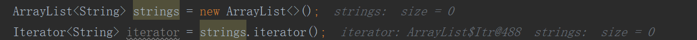

Java内部类
内部类
- 分类
- 成员内部类
- 局部内部类(包含匿名内部类)
1.成员内部类
定义格式：
1
2
3
4
5修饰符 class 外部类名称{
修饰符 class 内部类名称{
//...
}
}案例
1
2
3
4
5
6
7
8
9
10
11
12
13
14
15
16
17
18public class Body { //外部类
private String name;
Body(String name)
{
this.name = name;
}
//外部类的方法——外部类用内部类，需要内部类对象
public void alive() {
new Heart().beat();
}
//成员内部类
public class Heart {
public void beat() {
//内部类用外部类，随意访问
System.out.println(name + "心脏跳动! ");
}
}
}
1.1如何使用成员内部类
间接方式：在外部类的方法当中，使用内部类。然后只是调用外部类的方法
1
2
3Body body = new Body("掘金木匠");
// 在外部类的方法当中，使用内部类
body.alive();直接方式：公式：
[外部类名称.内部类名称对象名= new外部类名称().new内部类名称();]1
2Body.Heart heart = new Body("掘金木匠").new Heart();
heart.beat();
1.2内部类同名变量
如果出现了重名现象，那么格式是：
外部类名称.this.外部类成员变量名1
2
3
4
5
6
7
8
9
10
11
12
13public class Outer {
int num = 10; //外部类的成员变量
public class Inner /*extends object*/ {
int num = 20; //内部类的成员变量
public void methodInner() {
int num = 30; //内部类方法的局部变量
System.out.println(num); //局部变量，就近原则
System.out.println(this.num); //内部类的成员变量
System.out.println(Outer.this.num); //外部类的成员变量
}
}
}
2.局部内部类
如果一个类是定义在一个方法内部的，那么这就是一个局部内部类。
局部：只有当前所属的方法才能使用它，出了这个方法外面就不能用了。
定义格式:
1
2
3
4
5
6
7修饰符 class 外部类名称{
修饰符 返回值类型 外部类方法名称(参数列表) {
class 局部内部类名称{
//
}
}
}案例
1
2
3
4
5
6
7
8
9
10
11
12public class Outer {
public void method0uter(){
class Inner { //局部内部类
int num = 10;
public void methodInner() {
System.out.println(num); // 10
}
}
Inner inner = new Inner();
inner.methodInner();
}
}
2.1 局部内部类final问题
局部内部类，如果希望访问所在方法的局部变量，那么这个局部变量必须是有效final的
原因
- new出来的对象在堆内存当中。
- 局部变量是跟着方法走的，在栈内存当中。
- 方法运行结束之后，立刻出栈，局部变量就会立刻消失。
- 但是new出来的对象会在堆当中持续存在，直到垃圾回收消失。
- 局部变量与局部内部类的对象的生命周期不同；
为解决这一问题，Java把局部内部类要访问的局部变量重新拷贝了一份，并把备份放在内部类的常量池中，这样不论方法有没有执行结束，拷贝都是存在的，就不会再出现访问不存在的变量的错误了。
1
2
3
4
5
6
7
8
9
10
11
12public class MyOuter {
public void method0uter() {
// ⭐从Java 8开始，只要局部变量事实不变，那么final关键字可以省略。
final int num = 10; //所在方法的局部变量
// num = 130; ×
class MyInner{
public void methodInner() {
System.out.println(num);
}
}
}
}局部内部类访问的是方法体的参数呢？
Java采取的方法是，默认为局部内部类的构造方法传入该参数作为构造方法的参数，然后用该参数来初始化内部类中拷贝的变量a。
上面通过拷贝一份局部变量来解决生命周期不同的问题，如果方法体和局部内部类都改变了a的值会怎么样呢？
- Java规定局部内部类可访问的局部变量必须为final的，即内部类不能改变要访问的局部变量的值，这样就不会出现数据不同步的问题了。
3 匿名内部类【局部内部类特例】
如果接口的实现类/父类的子类只需要使用唯一的一次，那么这种情况下就可以省略掉该类的定义，而改为使用匿名内部类
定义格式
1
2
3接口名称 对象名 = new 接口名称() {
// 覆盖重写所有抽象方法
};案例
1
2
3
4
5
6
7
8
9
10
11
12
13
14
15
16
17
18
19
20
21
22
23
24
25
26
27
28
29public static void main(String[] args) {
ArrayList<String> col = new ArrayList<>();
Collections.addAll(col,"a","b","c");
//==============================================
// 局部内部类
class ConsumerImpl implements Consumer<String>
{
public void accept(String s) {
System.out.println(s);
}
}
ConsumerImpl consumer = new ConsumerImpl();
col.stream().forEach(consumer);
//==============================================
// 匿名内部类
col.stream().forEach(new Consumer<String>() {
public void accept(String s) {
System.out.println(s);
}
});
//==============================================
// lambda表达式
col.stream().forEach(s -> System.out.println(s));
//==============================================
// 方法引用
col.stream().forEach(System.out::println);
}
3.1 匿名对象
创建对象时，只有创建对象的语句，却没有把对象地址赋值给某个变量
虽然是创建对象的简化写法，但是应用场景非常有限。
语法格式：
1
new 类名(参数列表)；
应用场景
创建匿名对象直接调用方法，没有变量名
1
2new Scanner(System.in).nextInt();
new Scanner(System.in).nextInt();匿名对象可以作为方法的参数和返回值
作为参数
1
2
3
4
5
6
7
8
9
10
11
12class Test {
public static void main(String[] args) {
// 普通方式
Scanner sc = new Scanner(System.in);
input(sc);
//匿名对象作为方法接收的参数
input(new Scanner(System.in));
}
public static void input(Scanner sc){
System.out.println(sc);
}
}作为返回值
1
2
3
4
5
6
7
8
9
10
11
12
13class Test2 {
public static void main(String[] args) {
// 普通方式
Scanner sc = getScanner();
}
public static Scanner getScanner(){
//普通方式
//Scanner sc = new Scanner(System.in);
//return sc;
//匿名对象作为方法返回值
return new Scanner(System.in);
}
}
3.2匿名内部类 VS 匿名对象
- 匿名内部类，在【创建对象】的时候，只能使用唯一一次；如果希望多次创建对象，而且类的内容一样的话，那么就必须使用单独定义的实现类了。
- 匿名对象，在【调用方法】的时候，只能调用唯一一次；如果希望同一个对象，调用多次方法，那么必须给对象起个名字。
- 匿名内部类是省略了【实现类/子类名称】，但是匿名对象是省略了【对象名称】
- 强调：匿名内部类和匿名对象不是一回事
4.类的权限修饰符
- 类的权限修饰符：
public>protected>(default)>private - 定义一个类的时候，权限修饰符规则
- 外部类：public / (default)
- 成员内部类：public / protected / (default) / private
- 局部内部类：什么都不能写
5.编译后.Class文件
- 外部类保存为：
外部类.class - 内部类保存为：
外部类$内部类.class

6.访问权限
- 内部类用外部类，随意访问
- 外部类用内部类，需要内部类对象
1 | public class Body { //外部类 |
原文作者: 掘金木匠
原文链接: http://goldcarpenter.github.io/2019/02/12/内部类/
版权声明: 转载请注明出处(必须保留作者署名及链接)